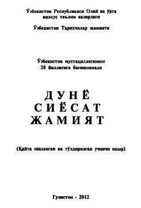

DSO'zbekistonning ijtimoiy-siyosiy va ma'naviy hayotiga oid qisqacha ma'lumotnoma.
Ushbu qo'llanma-ma'lumotnoma O'zbekiston Respublikasining ijtimoiy-siyosiy, iqtisodiy va ma'naviy hayotiga oid qisqacha ma'lumotlarni o'z ichiga oladi. Kitobda davlat ramzlari, hududiy tuzilish va mamlakatning asosiy ko'rsatkichlari haqida ma'lumotlar keltirilgan.